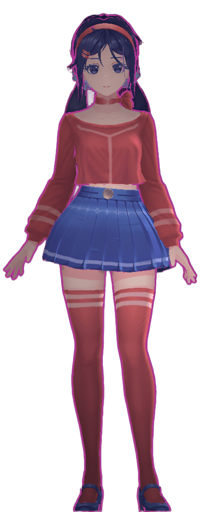
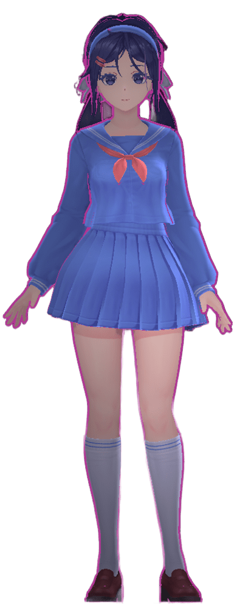
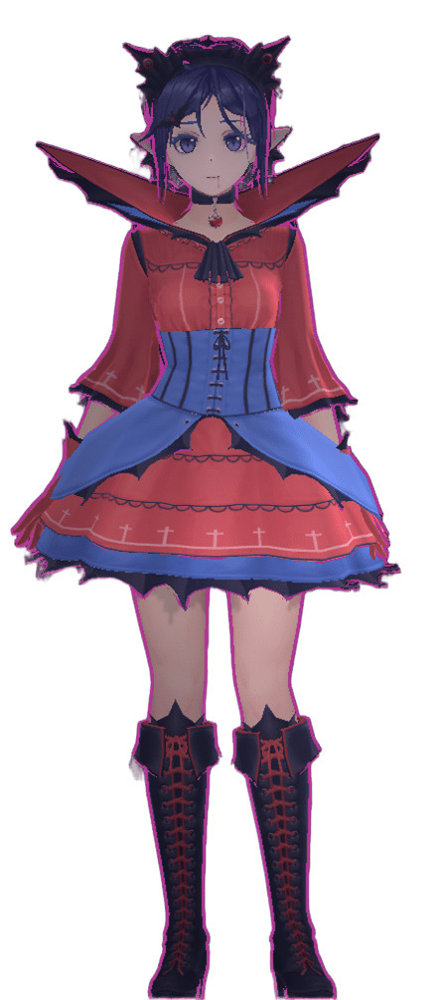

Este es el primer DevLog oficial de MISide: Pacify Mode. Un espacio para documentar cómo se construyó este fan site desde cero — las decisiones que tomé, los problemas que encontré, y todo lo que viene a continuación.
El origen: ¿por qué este sitio?
Todo empezó con una pregunta simple: ¿por qué no existe un fan site decente de MiSide en español? El juego de Aihasto explotó en popularidad a finales de 2024 y siguió creciendo en 2025, pero la comunidad hispanohablante no tenía un lugar centralizado con lore, guías, galería y banda sonora — todo en el mismo sitio, bien presentado.
Así nació la idea: construir el fan site que yo hubiera querido encontrar cuando empecé a jugar. Sin anuncios, sin clutter — solo el universo de Mita, bien contado.

Las primeras decisiones de diseño
Desde el principio tuve claro lo que quería lograr visualmente: un sitio que se sintiera parte del universo de MiSide, no solo un contenedor de información. El juego tiene una estética muy particular — lo digital corrupto, el mundo que parece amigable pero esconde algo más oscuro. Quería que el diseño lo reflejara.
Las tres reglas de diseño que me puse desde el día uno:
2. Tipografía con personalidad — Outfit para los textos, Share Tech Mono para los elementos de interfaz.
3. Cada página se siente como una sección diferente del "sistema Mita".

La stack técnica
Mantuve todo lo más simple y portable posible. Sin frameworks, sin bundlers, sin dependencias de npm. HTML, CSS y JavaScript vanilla — porque quería que cualquiera pudiera abrir el código y entenderlo sin instalar nada.
El preloader, el sistema de transiciones entre páginas, el reproductor de música persistente, el banner legal, la instalación como PWA — todo está escrito a mano, sin librerías externas.
Los retos más grandes
sessionStorage
para guardar el track actual, el tiempo de reproducción y el estado
antes de cada navegación y restaurarlo inmediatamente al cargar la nueva página.
El estado actual del sitio
A la fecha de este DevLog, MISide: Pacify Mode tiene las siguientes páginas activas:
¿Qué viene a continuación?
El blog es solo el comienzo de la siguiente fase del sitio. Aquí está el roadmap de lo que viene próximamente:

¿Cada cuánto saldrán los DevLogs?
Sin fecha fija. Los DevLogs saldrán cuando haya algo significativo que documentar — una nueva sección, un rediseño mayor, o un problema técnico interesante que valga la pena compartir. Calidad sobre cantidad.